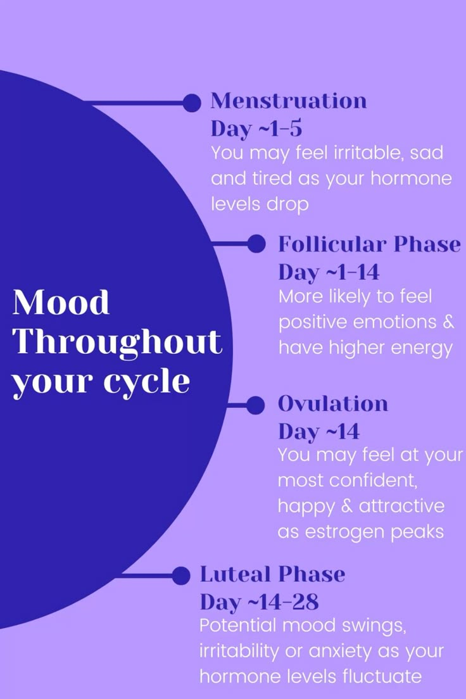

Cycle Tracking Suggestions
Tracking your cycle helps you understand your body and manage your health better.
-
Track Your Symptoms

Record symptoms like cramps, headaches, bloating, or fatigue each day. This helps you notice patterns and prepare for your next cycle.
-
Monitor Cycle Length

Keep track of the start and end dates of your period each month. Monitoring your cycle length can help you spot irregularities and share accurate info with your doctor.
-
Note Mood Changes
Write down your emotions and mood changes throughout your cycle. This can help you understand PMS, emotional patterns, and practice self-care.